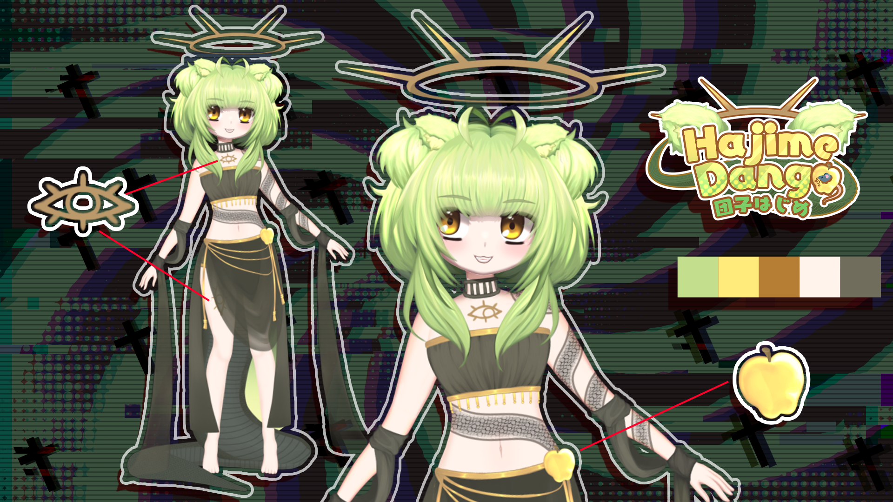

Log 3
(3/3)
--------------------------------
"Breakthrough discovery at Bizren! Dango has spoken to us for the first time since she has been contained in our facility!
Dango: Thank you... my rats... my precious, most beloved rats. Stay by my side, and never leave me!" The facility is practically jumping for joy. She has spoken to us, perhaps this means we can get some clear answers about her origins soon! God, I love science and technology!!! -Handler
---------------------------------------------------
YAY!!! Thank you for reading my story!!! I hope you found it fun learning more about my backstory!
Time for more clarity to wrap this up!
I'm Hajime Dango, or 団子創, A being created from the mind of a passionate craftsman, who had maybe a bit of a god complex. I can't blame him. There truly is something intoxicating about bringing your own imagination to life!
Here's a fun pic of me. I hope you like it! 
Now that you've gotten this far, you can reach this page easily by clicking on the copyright symbol in the bottom left corner.